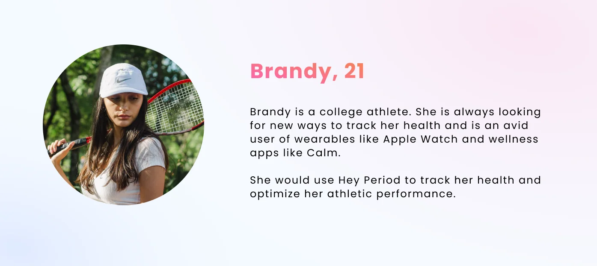
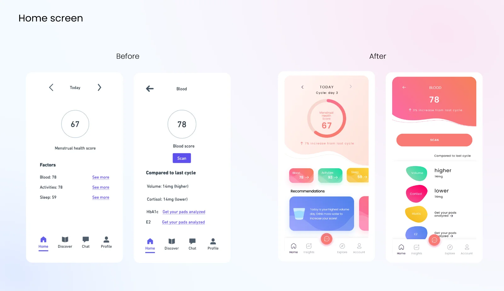
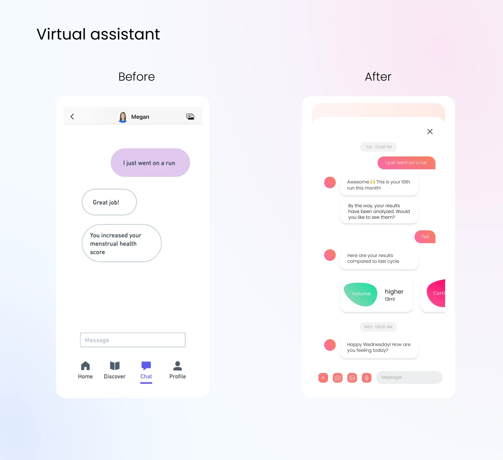

Hey Period — a brand women would trust with their health
Hey Period is a healthcare startup that lets women track their health through blood tests that use menstrual blood. During R&D they needed to build a waitlist, which meant they needed a brand, a marketing site, and an app people would believe in. I was the only designer on the project.
CLIENTHey Period · femtech startup
ROLEProduct designer · only designer
TIMELINE2 months · [ADD: year]
TOOLSFigma
What I owned end to endThe brand identity and the marketing website — strategy to final assets, including the marketing copy, refined with the Head of Product.
What I built on others' workThe app UI. The team had low-fidelity wireframes before I joined; I designed the visual system on top of them — and changed several UX decisions along the way (detailed below).
Status & outcomePre-launch Handed off during R&D. [ADD: waitlist numbers, launch status, or client feedback]
HOW TO READ THIS PAGE — artifacts carry disclosure labels: MEASURED real, checkable data · RETROSPECTIVE made after the project to document reasoning · SIMULATED illustrative, no real participants · PROPOSED a goal or plan, never an achieved result.
THE PROBLEM
A blood test that uses period blood is a genuinely new idea, and new ideas in healthcare have a trust problem. The brand had to feel credible enough for a health product and warm enough that women would actually talk about it. Every decision below either builds credibility or builds warmth — and the section at the end tallies which elements carry which job.
RESEARCH
Honest version: user access was limited during R&D, so most of what I learned came from secondary research — teardowns of Flo and Clue, community threads on period tracking, and the team's own customer conversations. [ADD: if you ran interviews yourself, how many and how recruited; if not, delete the interview claim for good]
RETROSPECTIVE What the competitor teardown established, reconstructed from the analysis that shaped the design:
Competitor
What it owns
Trust signal
Implication for Hey Period
Flo
Category default; the pink
Ubiquity — "everyone uses it"
Borrow the familiar pink; differentiate on lab data, which Flo doesn't have
Clue
Science-forward tracking
Clinical tone, citations
Matching Clue's coldness would erase the warmth women's-health forums say they miss
Mail-in test kits (Everlywell-type)
The mail-a-sample behavior
Medical packaging, results dashboards
Proof the behavior isn't the barrier when the kit feels professional — the unfamiliar sample type is
The two personas below are assumption personas: they exist to keep a fast-moving team pointed at the same two women, not to summarize interview data. That's also why they're written in the conditional — "she would use Hey Period to…"

Persona ABrandy, 21 — tracks everything already; Hey Period has to earn a slot next to her Apple Watch, not replace it.Persona BEmily, 29 — has a real medical need and no time; for her the product is a doctor-visit replacement, so trust matters more than fun.
BRAND IDENTITY
The team wanted to stand apart from the clinical-teal look that dominates women's health. The riskiest call was how far to push playful before a blood test stops feeling serious. Key decisions:
The pink deliberately echoes Flo.
Flo is the most-used period tracker; its reddish pink is the category's most familiar color. Borrowing that familiarity buys instant "this is a period product" recognition and a head start on trust, while the rest of the palette pushes somewhere Flo doesn't go.
Supporting colors are whimsical on purpose.
Periwinkle, marigold, mint, and blush do the warmth job — this is a product you mail your period blood to, and the packaging has to feel closer to a skincare subscription than a lab requisition.
Poppins, for both jobs.
Geometric enough to stay crisp at UI sizes, round enough to stay friendly at display sizes. One family across brand, web, and app kept a two-month timeline realistic.
RETROSPECTIVE The decision space, reconstructed — the three directions the category offers, and why this design landed where it did:
Direction
What it buys
Why it lost / won
Clinical teal — the diagnostics look
Instant medical credibility
Lost — indistinguishable from every telehealth brand; kills the community half of the brief
Millennial beige — the DTC wellness look
Shelf-pretty, safe
Lost — reads as skincare; buries the "this is real medicine" claim the product depends on
Familiar pink + whimsy — chosen
Category recognition via the Flo echo, warmth via the supporting palette
Won — the only direction serving both halves of the trust problem at once
[ADD: if actual mood-board or logo explorations survive, show them here and this table becomes documented evidence instead of reconstruction]
Brand systemPalette, type, lockups, and the kit box — the physical object had to sell the brand alone, since it arrives before the app gets opened.
MARKETING WEBSITE
The site's one job was waitlist signups, from a cold audience, for a product that doesn't exist yet. I designed every asset and refined the marketing copy with the Head of Product. The page runs claim → evidence → action:
The biomarker map is the credibility centerpiece.
Real clinical names — AMH, TSH, hs-CRP, HPV — grouped by what women actually care about (fertility, hormones, disease risk). It says "this is real medicine" without a paragraph of disclaimers.
Goal-based sections instead of feature lists.
"Solving your period problems / Optimizing your fertility / Tracking your sexual health" — each with a chart card showing what the data would look like. People buy the outcome, not the biomarker.
How-it-works in exactly three steps.
Choose what to track, receive the kit, learn about your health. The mail-in step is where skepticism lives, so it's framed as the easiest of the three.
Full siteFrom bold claim to waitlist form. (Typo in the goals headline corrected from the earlier export.)
APP UI
The team had already tested low-fidelity wireframes; my brief was "make it look like the brand." In practice the hi-fi pass changed real UX decisions too — these befores and afters are mine to defend:

HomeThe wireframe's labeled "Factors" list became tappable biomarker chips — each score is now an entry point, not a row of text. The health score gained cycle-day context so a number like 67 means something.InsightsOutlined text bubbles became color-coded cards with icons, one insight each — findings you can recognize at a glance on a lock-screen-length visit.

AssistantThe wireframe's human coach "Megan" became an explicitly-branded bot — a health product shouldn't pretend a person is reading your results. Biomarker cards render inline in the thread, and quick-reply chips replace free typing for common answers.
I also restructured the bottom navigation: Home / Discover / Chat / Profile became Home / Insights / Explore / Account. "Insights" is the product's core promise and earned a first-class tab; "Chat" moved to a floating entry point since the assistant is a helper, not a destination.
EARNING TRUST
Closing the loop on the problem statement — which elements carry credibility, and which carry warmth:
Credibility: clinical biomarker names on the map, chart-based evidence cards, the Flo-familiar pink, an assistant that is honestly a bot
Warmth: the whimsical supporting palette, blob shapes, skincare-grade packaging, insight cards that read like tips instead of lab results
Untested: whether the balance lands. [ADD: any signal — stakeholder reaction, waitlist conversion, user comments]
PROPOSED How I'd measure it — a framework, not results:
Metric
Definition
How
Goal (not a result)
Limitation
Perceived credibility
% describing the brand as "trustworthy/medical" in a 5-second test
5-sec exposure, n≈20, open response
≥60% mention trust or health before "cute"
Perception, not behavior
Waitlist conversion
Visits → signups on the marketing site
Site analytics + form events
Baseline first; direction over absolute
Traffic source dominates early numbers
Kit-return intent
% of signups saying they'd mail a sample this cycle
One-question follow-up email
Establish baseline
Stated intent overstates behavior
CONSTRAINTS & SELF-CRITIQUE
Two months, three surfaces, one designer, and a startup whose priorities changed weekly — the honest constraint set. Two things I'd fix first with more time:
Contrast. The biomarker chips carry white text in the app screens. I audited the shipped mockups after the fact — every chip fails, and every one passes by simply flipping to dark text:
MEASURED Retrospective accessibility audit — WCAG 2.1 contrast, sampled from the actual screen files (threshold 4.5:1):
Chip (sampled color)
White text
Dark text (#1A1A1A)
Fix
Sleep marigold rgb(247,204,78)
1.53 — fail
11.36 — pass
flip to dark text
Activities mint rgb(105,226,183)
1.60 — fail
10.91 — pass
flip to dark text
Blood coral rgb(253,138,147)
2.27 — fail
7.65 — pass
flip to dark text
E2 periwinkle rgb(140,166,255)
2.33 — fail
7.47 — pass
flip to dark text
Mock data as real content. The screens measure blood volume in mg in one place and ml in another. Health UI mock data deserves the same QA as shipping copy.
STATUS & WHAT I TOOK AWAY
Handed off pre-launch, during R&D. What I'd validate next: does the warm direction survive contact with the skeptical half of the audience?
Brand & sitemine, end to end
App UIvisual system + nav restructure over the team's lo-fi